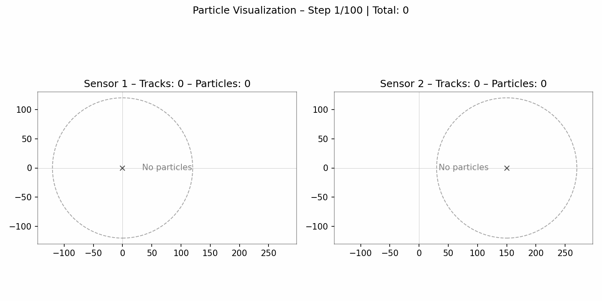

A potential target is considered when its posterior existence exceeds the declaration threshold and its predicted state has sufficient probability of detection at the receiving base station.
Research project
Belief propagation-based target handover
A distributed integrated sensing and communication method that transfers target beliefs—and, when useful, associated measurements—between base stations with overlapping fields of view while avoiding repeated information transfer.
Method
What is handed over—and when
The target prior is transferred once; the most likely associated measurement can also be shared. Local labels prevent repeated prior handovers and double counting.
The receiving base station appends transferred priors to its legacy targets, then processes local and handed-over measurements sequentially in its existing belief-propagation update.
Animation
Two-base-station simulation

Evidence boundary
What the result establishes
The published evaluation supports comparable aggregate GOSPA to its centralized baseline in the specified two-BS urban simulation.
The handover threshold balances missed detections against false alarms near the overlap boundary; the best behavior is not threshold-free.
The paper leaves heterogeneous networks, more complex sensing configurations, standard integration, and real-time deployment to future work.
Resources